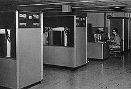

Informations sur le(s) créateur(s):
International Business Machines Corporation, connue sous le sigle IBM, est une société multinationale américaine présente dans les domaines du matériel informatique, du logiciel et des services informatiques.
Informations sur la machine:
L’IBM RAMAC 305 (RAMAC pour Ramdom Access Method of Accounting and Control, en anglais) est le premier ordinateur à disque dur (l’IBM 350) commercialisé en septembre 1956 par IBM.
Il s'agissait d'un ordinateur à usage général, qui permettait d'enregistrer des transactions et de refléter les modifications dans les comptes correspondants. Le système était composé des éléments suivants: